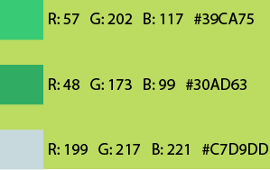

LOGOTIPO, DECISIONES TIPOGRÁFICAS Y CROMÁTICAS
El imagotipo de 'Burro Turismo' fue construido con una síntesis lineal de distintos trazos, sobre las orejas y pelo de este personaje, siendo acompañado por el nombre de 'Burro Turismo' con la tipografía 'Montserrat'.

La tipografía que se utilizó fue 'Montserrat' ya que cuenta con muchas variables, la cual también se utilizó y se mantuvo a lo largo de toda la página web, por sus buenos trazos y seguridad, también para hacer juego y tener mayor contraste entre los trazos en ambas palabras.
- Montserrat Regular:
ABCDEFGHIJKLMÑOPQRSTUVWXYZ
0 1 2 3 4 5 6 7 8 9
- Montserrat Bold:
ABCDEFGHIJKLMÑOPQRSTUVWXYZ
0 1 2 3 4 5 6 7 8 9
Los colores que se usaron son gamas de verde en relación al pantano donde vive burro con Shrek a lo largo de la película y se usa un color celeste para tener un mayor contraste.
